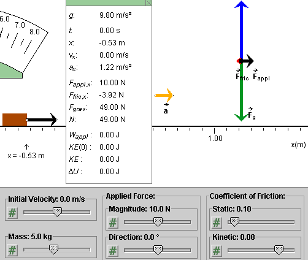
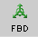
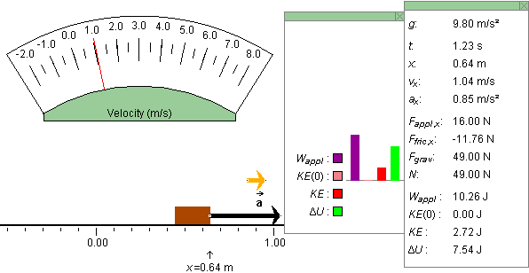

Instructions
This page is designed to get you started using the applet. The applet should be open. The step-by-step instructions on this page are to be done in the applet. You may need to toggle back and forth between instructions and applet if your screen space is limited.
Exercise 1. RESET  the applet. Drag both the block and the
velocitometer to the left to make room for the data box.
Display the latter by pressing the Data button
the applet. Drag both the block and the
velocitometer to the left to make room for the data box.
Display the latter by pressing the Data button  , and drag it so
that the following elements are non-overlapping: block, data
box, acceleration vector, free-body diagram. See Figure 1 below
for an illustration.
, and drag it so
that the following elements are non-overlapping: block, data
box, acceleration vector, free-body diagram. See Figure 1 below
for an illustration.

Figure 1
If you did not change any slider settings, the forces are such that the block's acceleration is not zero, as indicated by the orange acceleration vector and the non-zero value of ax in the data box..
The applet's motion is frozen. Click PLAY to see the motion, then PAUSE to freeze it again.
Exercise 2. REWIND  the applet.
the applet.
Increase the static coefficient of friction μs from 0.10 to 0.30. In doing so, observe that the acceleration becomes zero at some intermediate value of μs and that the magnitude of the friction force increases to a maximum value of 10.00 N in the process. (The data box shows that Ffric,x decreases to a minimum value of -10.00 N.) At what value of μs does the acceleration become zero and Ffric,x become equal to -10.00 N?
Verify that this happens at μs = 0.21.
Exercise 3. Observe that when you are increasing μs the PLAY button becomes inactive as soon as the acceleration becomes 0. The applet is designed so that the PLAY button is active only if pressing it would result in a motion of the block.
With μs = 0.30 and the acceleration equal to zero, set the initial velocity to some non-zero value. (If the Initial Velocity slider is inactive, press REWIND.) Observe that the PLAY button becomes active as soon as the initial velocity is non-zero even though the acceleration remains equal to zero.
Exercise 4. With μs = 0.30 and both the initial velocity and acceleration equal to 0, increase the magnitude of the applied force past 10 N while keeping the force horizontal at all times. Since the block is not moving, the force of friction is called static friction in this case.
Observe that the static friction force increases in magnitude with the applied force: the red arrow in the free-body diagram becomes longer and the value of Ffric,x in the data box becomes more negative. Thus, the static force of friction can take on a range of values.
Observe that Ffric,x + Fappl,x = 0 as long as the acceleration is zero, i.e., as long as we are dealing with a static situation.
Exercise 5. With μs = 0.30 and both the initial velocity and acceleration equal to 0, increase the magnitude of the applied force until the acceleration of the block becomes non-zero. What is the magnitude of the applied force at this point, assuming the applied force is horizontal?
Verify that the acceleration becomes non-zero when the magnitude of the applied force reaches 14.8 N.
Observe that at this point the magnitude of the friction force suddenly decreases. To what value does it decrease? Now we are dealing with kinetic friction since the block is moving. (If you don't click PLAY, the block's motion is frozen.)
Increase the magnitude of the applied force to 16 N, and PLAY the motion. What is the magnitude of the friction force now? PAUSE the motion, and change the magnitude of the applied force to 20 N. What is the magnitude of the friction force now? You should find that the magnitude of the kinetic friction force has the constant value of 11.76 N independent of the block's velocity or acceleration.
Exercise 6. REWIND the applet. Make sure the settings are still as follows.
The applet initially sets the kinetic coefficient of friction to 80% of the static coefficient of friction. Therefore, if the static coefficient of friction is set to 0.30, the applet sets the kinetic coefficient of friction to 0.24. The applet does not allow values of the kinetic coefficient of friction greater than 90% and less than 50% of the static coefficient.
Change the value of the kinetic coefficient of friction from 0.24 to 0.20 by 0.01 at a time. The easiest way to do this is by clicking on the slider to the left of the slider tab. Each time you click, the tab moves down one notch, i.e., by 0.01.
Observe that the magnitude of the acceleration increases and the magnitude of the (kinetic) friction force decreases as the kinetic coefficient of friction decreases.
Increase the kinetic coefficient of friction in steps of 0.01, by clicking on the slider to the right of the slider tab, and observe the acceleration and friction force vectors.
Now vary the value of the static coefficient of friction. Observe that the kinetic coefficent of friction gets adjusted automatically, such the ratio of the two coefficients stays constant. Again, observe the changes in the acceleration and friction force vectors.

Exercise 1. RESET the applet. Press the Data button , and display the
Data box. Move the data box and/or the free-body diagram so that
the two do not overlap.
Set the static coefficient of friction to 0.30.
Drag the tip of the black applied force vector that is attached to the block. Vary the vector in both magnitude and direction, and observe the corresponding changes in the free-body diagram. In general, as the applied force is varied, both the normal force and the friction force change.
Exercise 2. Hold down the SHIFT key while you are dragging the tip of the black applied force vector attached to the block. Now the force vector is forced to remain horizontal. Again observe the changes in the free-body diagram as you change the applied force.
Exercise 1. REWIND the applet, and set the static coefficient of friction to 0.30. Change no other settings. The block's acceleration should be zero, as indicated in the middle of the applet window.
Increase the magnitude of the applied force to 16 N while keeping the force horizontal. The acceleration should now be non-zero. Observe that the magnitude of the applied force in the free-body diagram is larger than that of the friction force.
PLAY the motion. Observe the red velocitometer needle. It shows that the block's velocity is increasing. Observe that the motion of the red needle of the velocitometer is uniform. This indicates that the block's acceleration is constant.
PAUSE the motion.
Exercise 2. REWIND the applet. Set the initial velocity to 1.0 m/s. Observe that this change has no effect on the size of the acceleration vector or on the size of the friction force in the free-body diagram.
PLAY the motion. Observe that the block's initial motion is faster than before but that the rate at which the velocitometer needle is moving to the right appears to be the same as before, because the acceleration is unchanged. PAUSE the motion.
Exercise 3. REWIND the applet. Set the initial velocity to -2.0 m/s. Observe that as soon as the Initial Velocity slider takes on a negative value, the magnitude of the block's acceleration jumps and the force of friction in the free-body diagram changes direction. For negative values of the initial velocity, the force of friction points to the right.
PLAY the motion. Observe that at first the block moves left while slowing down, momentarily comes to a stop, and then resumes moving, but this time to the right and with increasing speed. The velocitometer needle is moving to the right at all times, but at different rates before and after the block comes to a stop.
Observe the change in the magnitude of the ball's acceleration vector and the change in the direction of the friction force as the ball's motion reverses direction.
Exercise 4. REWIND the applet. Change the magnitude of the applied force to 10.0 N. Observe that the magnitude of the friction force is now slightly less than that of the applied force.
PLAY the motion. Observe that this time the block comes to a stop and remains at a standstill. At the moment the block's motion stops, the force of friction reverses direction.
Exercise 5. REWIND the applet. Set the sliders as follows.
Hide the free-body diagram by clicking the FBD toggle button
, and display
the data box by pressing the Data button .
PLAY the motion, and observe the changes of t, x, and vx in the data box. PAUSE the motion. Then STEP the motion forward 0.01 s per step. This allows you to reach a precise value of the time t at which you want to pause the motion, e.g., at t = 1.23 s. Try it. Record the value of x at this time. (For comparison with that observed in the next Exercise.)
Exercise 6. REWIND the applet. Drag the x-axis so that the block's position (front edge of block) is at 1.00 m. PLAY the motion, and again PAUSE it at t = 1.23 m. What is the value of x now? Compare it to that observed in Exercise 5.
Exercise 1. RESET the applet, and set the applet to the initial conditions
Hide the free-body diagram, and instead display the energy and
data boxes by pressing the Energy button  and Data button .
and Data button .
PLAY/STEP the motion up to time t = 1.23 s. Figure 2 below illustrates what you can see.

Figure 2
Verify that the data in the data box satisfy the equation
Wappl = ΔKE
+ ΔU.  (1)
(1)
Note that the data box gives the initial value of the kinetic energy, KE(0), and the instantaneous value of the kinetic energy, KE. From these two values you can calculate the change ΔKE = KE - KE(0) in the kinetic energy since the beginning of the motion. Of course, in the present case where the initial velocity is equal to 0, ΔKE = KE - 0 = KE.
Exercise 2. REWIND the applet. Set the initial velocity to 1.0 m/s. Notice that both the initial and the instantaneous kinetic energies are equal to each other and unequal to zero at t = 0, as indicated by the pale red and red bars in the energy box and by their values in the data box. Check that the value for KE in the data box satisfies the equation
KE = (m/2) v2  (2)
(2)
where m and v are the mass and the speed of the block, respectively.
PLAY/STEP the motion to some time of your choice. Again, verify that Eq.(1) above is satisfied, where this time the initial kinetic energy is not zero.